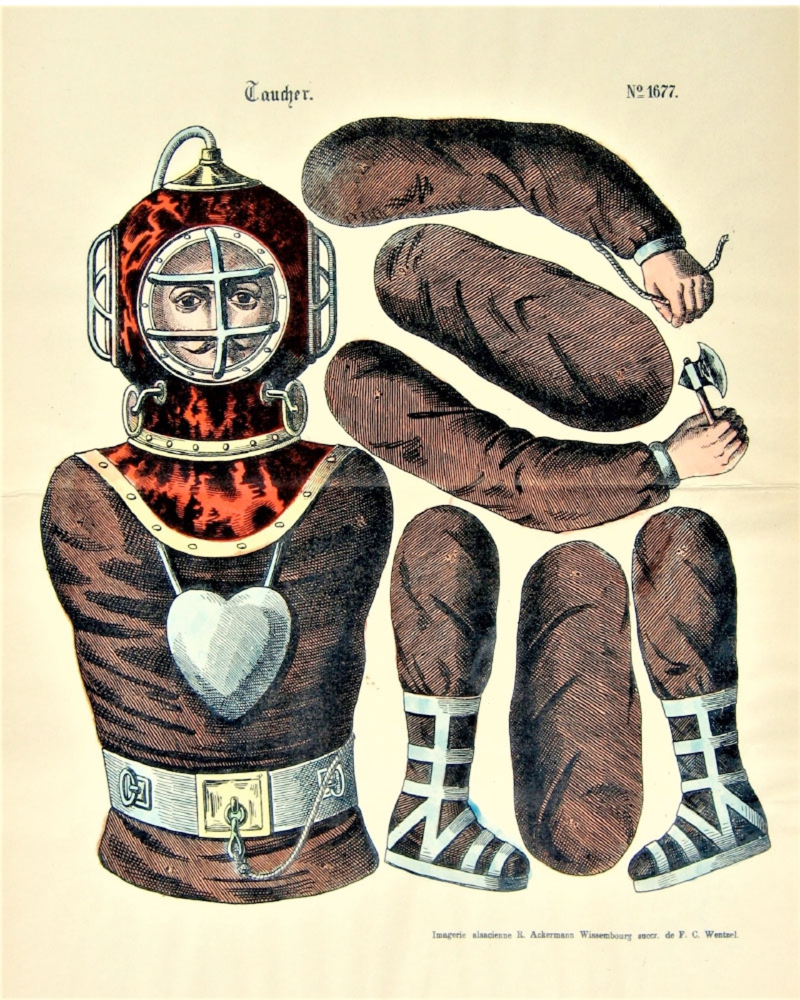

No AI involved — play as people did 150 years ago
Funny Paper Jumping Jacks
Lithographs from the Wissembourg Printworks, 1880–1918
This website presents a selection of original lithographed paper jumping jacks from the Imagerie Wissembourg in Alsace (France). Assembled by Ralf Geissler, the collection is devoted exclusively to the work of this once-renowned and now-closed printing house. Comprising more than 150 prints, it is possibly one of the largest private holdings in this field.

Browse the Collection
Categories

Warriors
Soldiers, legionaries and martial figures. Example: Turkish Street Robber.

Historical Figures
Figures drawn from literature and the historical imagination. Example: Don Quixote.

Character Types
Comic, domestic and eccentric figures. Example: Man with Umbrella.

National and Regional Types
Figures framed as national or regional identities. Example: Russian Figure.

Professions
Trades and working identities. Example: Diver.

Harlequins
Stage figures and theatrical comic characters. Example: Harlequin.

Father Christmas
Festive seasonal figures. Example: Hans Rapp.